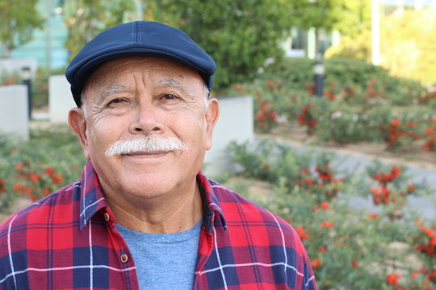

Target Audience
The target audience are business owners who would like to join the chamber of commerce and/or learn about the organization, such as events, origins, contact information, etc.
Personas
First Persona
- Fictional Name: Eduardo Cerrato
- Job Title: CEO of Graphics Design Company
- Demographics: 32 years old, Married, Father of two, has a Degree in Graphics Design
- Goals: Collaborate with high-end companies, have more than two business locations, and move to a bigger house
- Environment: Tech savvy, fast internet, spends most of his time working
Second Persona

- Fictional Name: Christian Rodriguez
- Job Title: Owner of a Restaurant
- Demographics: 65 years old, Father of three, grandfather of 10, has a degree in Business Management
- Goals: Become a chain, expand to other countries
- Environment: Not very familiar with technology and ofter relies in family and friends in that area, spends most of his time running his business, likes meeting new people
Scenarios
- What on earth is a chamber of commerce?
- What are the benefits of joining a chamber of commerce?
- How do I join Chamberwood?
- What makes this chamber of commerce different than others?
- How can I obtain more information about this organization?